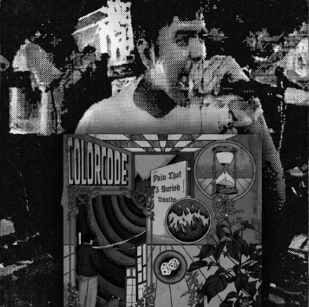

PAIN THAT I BURIED INSIDE

AUDIO PREVIEW (SYNTH SAMPLER)
Lagu-lagu Colorcode memadukan distorsi gitar melodik khas emo/pop-punk 2000-an dengan lirik katarsis yang jujur tentang pencarian jati diri dan kepedihan yang terpendam.
TRACKLIST
- 01. Shiver 03:55
- 02. Submerge 04:15
- 03. All Is Gone 03:10
REKAM JEJAK & SCENE JOGJA
Lahir dari denyut kancah musik indie Yogyakarta, Colorcode membawakan energi pop-punk dan emo yang dipenuhi emosi mentah. Mengambil pengaruh dari gelombang alternative rock awal 2000-an, lagu-lagu mereka menggambarkan persimpangan antara harapan, kehilangan, dan proses berdamai dengan masa lalu.
Dalam edisi serba hitam ini, album "Pain That I Buried Inside" disajikan sebagai dokumentasi arsip visual & audio yang merekam perjalanan energi panggung gig underground hingga proses rekaman mandiri.
LIRIK & ARSIP KATARSIS
01. Where The Sea Sleeps
02. Submerge
SPESIFIKASI PRODUKSI & GEAR
INSTRUMENTASI
- Gitar: Fender Stratocaster & Gibson Les Paul Studio
- Bass: Fender Precision Bass
- Drums: Tama Imperialstar + Zildjian Cymbals
PRODUKSI STUDIO
- Studio: Jogja Underground Audio Lab
- Mixing & Mastering: Analog Tape & Valve Preamps
- Layout & Art Direction: Dark Minimalist Black Aesthetic